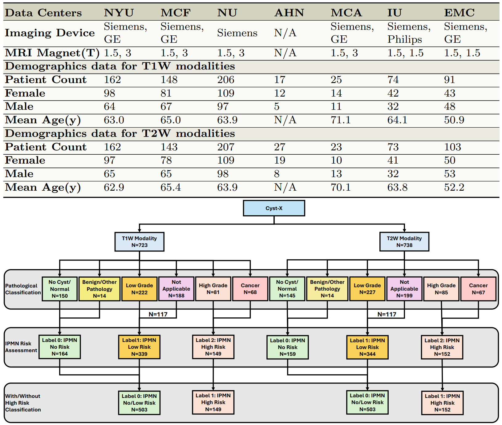
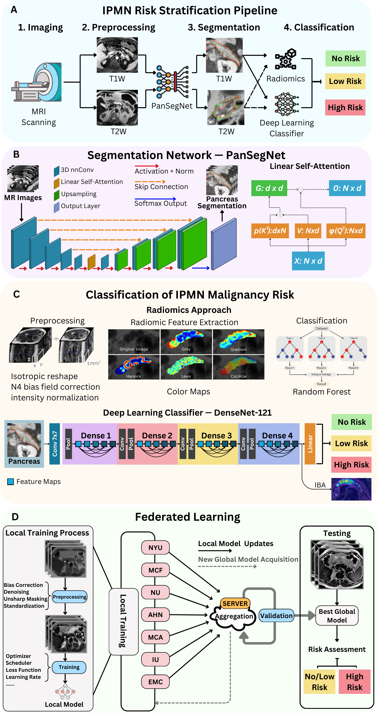
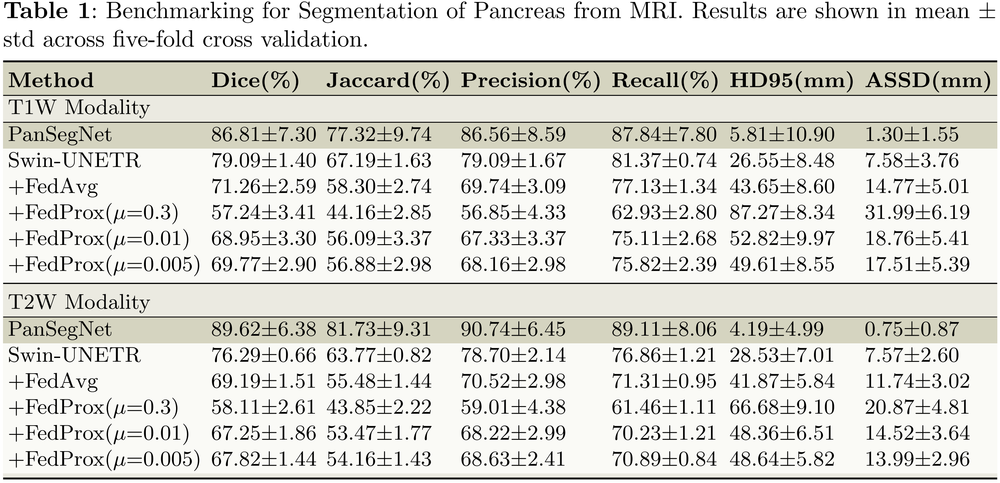
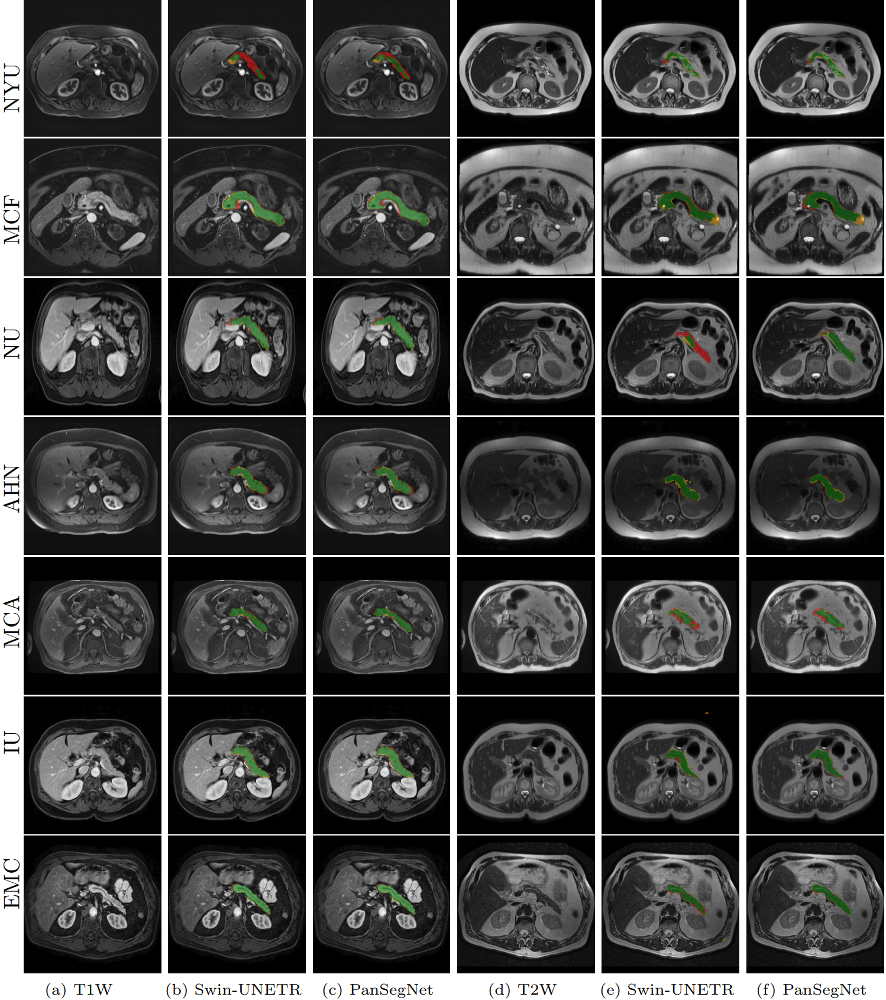
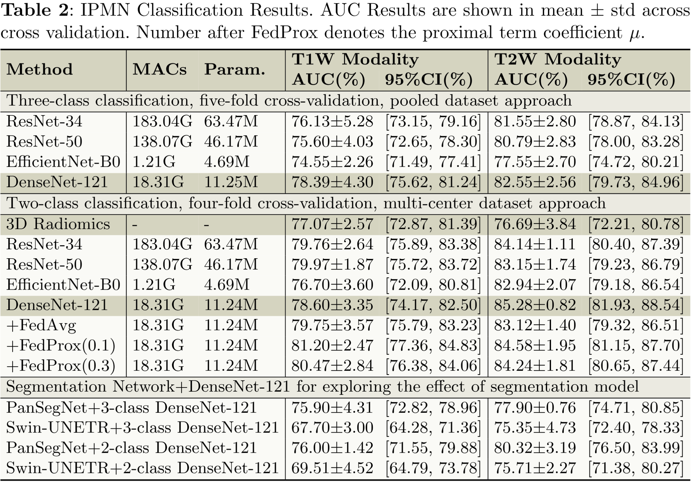

Cyst-X introduces the largest multi-center MRI benchmark (1,461 scans from 764 patients across 7 international centers) for IPMN malignancy-risk stratification. By coupling PanSegNet pancreas segmentation with a 3D DenseNet-121 classifier, Cyst-X achieves an AUC of 85.28%, matching expert radiologists' sensitivity at comparable specificity.
Pancreatic cancer is projected to be the second-deadliest cancer by 2030, making early detection critical. Intraductal papillary mucinous neoplasms (IPMNs), key cancer precursors, present a clinical dilemma, as current guidelines struggle to stratify malignancy risk, leading to unnecessary surgeries or missed diagnoses. Here, we introduce Cyst-X, a multi-center MRI benchmark and a federated learning framework for IPMN malignancy-risk stratification. The dataset comprises 1,461 abdominal MRI scans from 764 patients at seven international centers, with three-tier malignancy labels anchored in histopathology or three-year imaging follow-up and expert pancreas segmentations. The pipeline couples the PanSegNet pancreas segmenter with a 3D DenseNet-121 classifier and a parallel radiomics predictor. On internal cross-validation, the deep learning classifier reached a mean area under the receiver operating characteristic curve (AUC) of 0.85 (95% CI 0.84–0.86) on T2-weighted MRI for high-risk versus low- or no-risk discrimination, with the average precision rising from a prevalence baseline of 0.23 to 0.64. This performance was preserved (AUC 0.85, FedProx) when training was distributed across institutions without exchange of raw patient images. Benchmarked against three blinded radiologists on a 629-case reader subset evaluated under imaging-only conditions, the classifier matched or exceeded sensitivity at comparable specificity.





@article{pan2025cyst,
title={Cyst-X: A Multi-Center MRI Benchmark and Federated Learning Framework for Malignancy-Risk Stratification of Pancreatic Cystic Neoplasm},
author={Pan, Hongyi and Durak, Gorkem and Keles, Elif and Hong, Ziliang and Seyithanoglu, Deniz and Zhang, Zheyuan and Medetalibeyoglu, Alpay and Aktas, Halil Ertugrul and Bejar, Andrea Mia and Taktak, Yavuz and others},
journal={arXiv preprint arXiv:2507.22017},
year={2025}
}